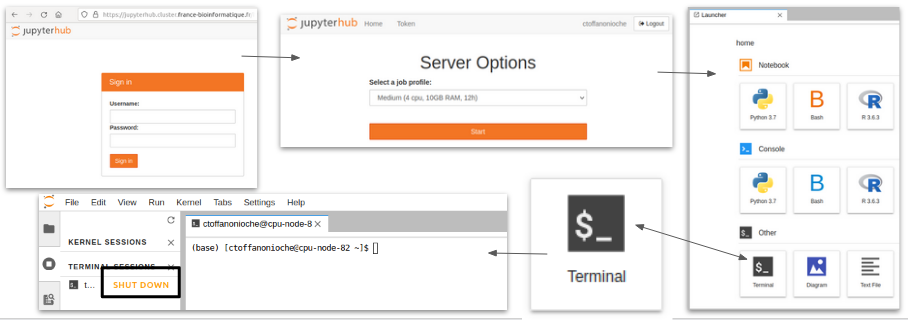
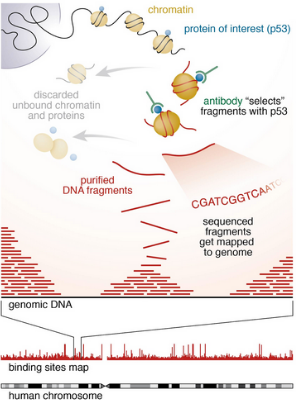
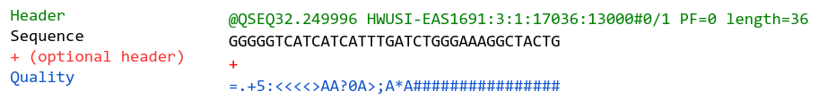
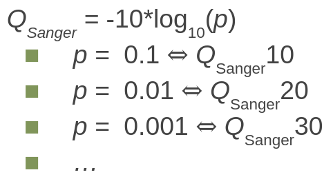

Jeu de données#
RAPPEL- Accès au Jupyter Lab (s’il ne tourne pas déjà)#
Navigateur : https://jupyterhub.cluster.france-bioinformatique.fr/
Accès au service avec votre couple “username/password”
Choisir l’option “Medium” et démarrer le serveur (bouton “start”)
Choisir une session “Terminal” 
Présentation du jeu de données#
Immuno-précipitation de chromatine (ChIP-Seq) :
Un traitement (ADN fragmenté + immunoprécipitation par Ac. anti-ESR1 )
Un control (~ ADN fragmenté)

Télécharger des fichiers#
On peut utiliser un navigateur (e.g Cyberduck) pour téléverser sur le serveur.
Mieux, on peut effectuer directement le téléchargement depuis le terminal si on dispose de l’URL.
On utilise alors la commande wget.
se déplacer dans l’arborescence de votre projet : /shared/projects/<project> (2325_ebaii à adapter) et dans les sous-répertoires chip-seq puis fastq.
# 2325_ebaii à adapter à votre projet
cd /shared/projects/2325_ebaii/coursLinux/demo/chip-seq/fastq
?2004h
Vérifier qu’on est bien dans le répertoire /shared/projects/<projet>/chip-seq/fastq (<projet> à adapter) avec pwd :
# 2325_ebaii à adapter à votre projet
pwd
/shared/projects/2325_ebaii/coursLinux/demo/chip-seq/fastq
Téléverser un fichier de données fastq avec wget depuis son accès url https://zenodo.org/record/5571592/files/siNT_ER_E2_r3_chr21.fastq.gz :
wget https://zenodo.org/record/5571592/files/siNT_ER_E2_r3_chr21.fastq.gz
--2023-11-04 13:05:15-- https://zenodo.org/record/5571592/files/siNT_ER_E2_r3_chr21.fastq.gz
Resolving zenodo.org (zenodo.org)... 188.185.10.78, 188.185.33.206, 188.185.22.33, ...
Connecting to zenodo.org (zenodo.org)|188.185.10.78|:443... connected.
HTTP request sent, awaiting response... 301 MOVED PERMANENTLY
Location: /records/5571592/files/siNT_ER_E2_r3_chr21.fastq.gz [following]
--2023-11-04 13:05:15-- https://zenodo.org/records/5571592/files/siNT_ER_E2_r3_chr21.fastq.gz
Reusing existing connection to zenodo.org:443.
HTTP request sent, awaiting response... 200 OK
Length: 10857524 (10M) [application/octet-stream]
Saving to: ‘siNT_ER_E2_r3_chr21.fastq.gz’
100%[======================================>] 10,857,524 --.-K/s in 0.1s
2023-11-04 13:05:15 (75.4 MB/s) - ‘siNT_ER_E2_r3_chr21.fastq.gz’ saved [10857524/10857524]
Vérifier que le fichier est bien présent :
ls
siNT_ER_E2_r3_chr21.fastq.gz
Décompression#
La commande gunzip permet de décompresser un fichier au format *.gz. Sa syntaxe générale est la suivante:
gunzip [-cfhkLNqrtVv] [-S suffix] file [file [...]]
Décompresser le fichier *.gz:
gunzip siNT_ER_E2_r3_chr21.fastq.gz
Regarder l’extension du fichier et remarquer que la partie .gz a disparu :
ls
siNT_ER_E2_r3_chr21.fastq
Les lectures brutes (raw reads) sont au format fastq#

La qualité est généralement au format Sanger (cf. après).
Exercice#
Utilisez une des commandes vues précédemment pour visualiser le contenu du fichier fastq
Utiliser la commande less pour visualiser le contenu du fichier fastq (q pour quitter):
less siNT_ER_E2_r3_chr21.fastq
Le score de qualité Sanger#
Une valeur de score Sanger est attribuée à chaque base séquencée
Basée sur p, la probabilité d’erreur (i.e. que la base soit fausse)

Les scores sont encodés en ASCII 33
Objectif : compresser les données en diminuant le nombre de caractères utilisés pour encoder la qualité.
Le score de qualité Sanger varie entre 0 et 41 et est encodé avec le code ASCII:

!correspond à 0“correspond à 1#correspond à 2$correspond à 3…
Icorrespond à 40